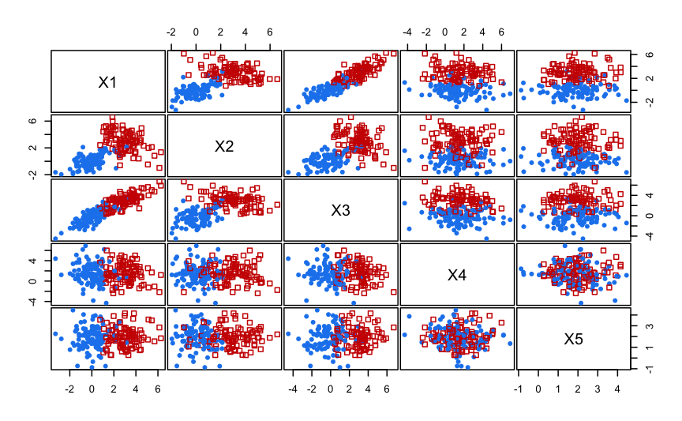

A quick tour of clustvarsel
Luca Scrucca
16 Dec 2020
clustvarsel.RmdIntroduction
The clustvarsel package implements variable selection methodology for Gaussian model-based clustering which allows to find the (locally) optimal subset of variables in a dataset that have group/cluster information. A greedy or headlong search can be used, either in a forward-backward or backward-forward direction, with or without sub-sampling at the hierarchical clustering stage for starting mclust models. By default the algorithm uses a sequential search, but parallelisation is also available.
This document gives a quick tour of clustvarsel (version 2.3.4) functionalities. It was written in R Markdown, using the knitr package for production. See help(package="clustvarsel") for further details and references provided by citation("clustvarsel").
Simulated clustering data example
In this example we simulate a dataset on five dimensions with only the first two variables contain clustering information, the third being highly correlated with the first one, and the remaining features which are simply noise variables.
n <- 200 # sample size
pro <- 0.5 # mixing proportion
mu1 <- c(0,0) # mean vector for the first cluster
mu2 <- c(3,3) # mean vector for the second cluster
sigma1 <- matrix(c(1,0.5,0.5,1),2,2) # covar matrix for the first cluster
sigma2 <- matrix(c(1.5,-0.7,-0.7,1.5),2,2) # covar matrix for the second cluster
X <- matrix(0, n, 5, dimnames = list(NULL, paste0("X", 1:5)))
set.seed(1234) # for replication
u <- runif(n)
Class <- ifelse(u < pro, 1, 2)
X[u < pro, 1:2] <- MASS::mvrnorm(sum(u < pro), mu = mu1, Sigma = sigma1)
X[u >= pro, 1:2] <- MASS::mvrnorm(sum(u >= pro), mu = mu2, Sigma = sigma2)
X[, 3] <- X[, 1] + rnorm(n)
X[, 4] <- rnorm(n, mean = 1.5, sd = 2)
X[, 5] <- rnorm(n, mean = 2, sd = 1)
clPairs(X, Class)
out <- clustvarsel(X)
## iter 1
## + adding step
## Var BICdiff Step Decision
## 1 X2 11.17931 Add Accepted
## iter 2
## + adding step
## Var BICdiff Step Decision
## 2 X1 85.1953 Add Accepted
## iter 3
## + adding step
## - removing step
## Var BICdiff Step Decision
## 3 X3 -14.91130 Add Rejected
## 4 X1 85.19104 Remove Rejected
## final iter
## * fitting model on selected subset
out
## ------------------------------------------------------
## Variable selection for Gaussian model-based clustering
## Stepwise (forward/backward) greedy search
## ------------------------------------------------------
##
## Variable proposed Type of step BICclust Model G BICdiff Decision
## X2 Add -822.6398 E 2 11.17931 Accepted
## X1 Add -1482.8408 VEV 2 85.19530 Accepted
## X3 Add -2047.7064 EEV 2 -14.91130 Rejected
## X1 Remove -822.6355 E 2 85.19104 Rejected
##
## Selected subset: X2, X1
summary(out$model)
## ----------------------------------------------------
## Gaussian finite mixture model fitted by EM algorithm
## ----------------------------------------------------
##
## Mclust VEV (ellipsoidal, equal shape) model with 2 components:
##
## log.likelihood n df BIC ICL
## -714.9288 200 10 -1482.841 -1493.898
##
## Clustering table:
## 1 2
## 99 101
out <- clustvarsel(X, direction = "backward", fit = FALSE)
## iter 1
## - removing step
## Var BICdiff Step Decision
## 1 X3 -38.09195 Remove Accepted
## iter 2
## - removing step
## Var BICdiff Step Decision
## 2 X4 -23.50212 Remove Accepted
## iter 3
## - removing step
## + adding step
## Var BICdiff Step Decision
## 3 X5 -16.25831 Remove Accepted
## 4 X3 -14.91130 Add Rejected
## iter 4
## - removing step
## + adding step
## Var BICdiff Step Decision
## 5 X1 95.55735 Remove Rejected
## 6 X3 -14.91130 Add Rejected
out
## ------------------------------------------------------
## Variable selection for Gaussian model-based clustering
## Stepwise (backward/forward) greedy search
## ------------------------------------------------------
##
## Variable proposed Type of step BICclust Model G BICdiff Decision
## X3 Remove -2925.4851 EVE 2 -38.09195 Accepted
## X4 Remove -2067.0668 EVE 2 -23.50212 Accepted
## X5 Remove -1482.8408 VEV 2 -16.25831 Accepted
## X3 Add -2047.7064 EEV 2 -14.91130 Rejected
## X1 Remove -833.0019 V 2 95.55735 Rejected
## X3 Add -2047.7064 EEV 2 -14.91130 Rejected
##
## Selected subset: X1, X2
out <- clustvarsel(X, search = "headlong")
## iter 1
## + adding step
## Var BICdiff Step Decision
## 1 X2 11.17931 Add Accepted
## iter 2
## + adding step
## Var BICdiff Step Decision
## 2 X1 85.1953 Add Accepted
## iter 3
## + adding step
## - removing step
## Var BICdiff Step Decision
## 3 X3 -14.9113 Add Rejected
## 4 X1 85.1953 Remove Rejected
## final iter
## * fitting model on selected subset
out
## ------------------------------------------------------
## Variable selection for Gaussian model-based clustering
## Headlong (forward/backward) search
## ------------------------------------------------------
##
## Variable proposed Type of step BICclust Model G BICdiff Decision
## X2 Add -822.6398 E 2 11.17931 Accepted
## X1 Add -1482.8408 VEV 2 85.19530 Accepted
## X3 Add -2047.7064 EEV 2 -14.91130 Rejected
## X1 Remove -822.6398 E 2 85.19530 Rejected
##
## Selected subset: X2, X1Simulated no-clustering data example
In this example we simulate a dataset on ten dimensions with no clustering. It is shown that model-based clustering on all the variables yield the wrong conclusion that 2 clusters are present, but after subset selection the Gaussian finite mixture model correctly select a single cluster solution.
n <- 200
p <- 10
mu <- rep(0,p)
sigma1 <- matrix(c(1,0.5,0.5,1),2,2)
sigma2 <- matrix(c(1.5,-0.7,-0.7,1.5),2,2)
sigma <- Matrix::bdiag(sigma1, sigma2, diag(6))
set.seed(12345)
X <- MASS::mvrnorm(n, mu, sigma)
colnames(X) <- paste0("X", 1:p)
clPairs(X)
Model-based clustering on all the available variables:
mod <- Mclust(X)
summary(mod$BIC)
## Best BIC values:
## EII,2 VII,2 EII,3
## BIC -5899.073 -5901.88582 -5922.53452
## BIC diff 0.000 -2.81261 -23.46131
summary(mod)
## ----------------------------------------------------
## Gaussian finite mixture model fitted by EM algorithm
## ----------------------------------------------------
##
## Mclust EII (spherical, equal volume) model with 2 components:
##
## log.likelihood n df BIC ICL
## -2891.255 200 22 -5899.073 -5953.953
##
## Clustering table:
## 1 2
## 90 110Subset selection using forward/backward greedy algorithm:
(out1 <- clustvarsel(X, verbose = FALSE))
## ------------------------------------------------------
## Variable selection for Gaussian model-based clustering
## Stepwise (forward/backward) greedy search
## ------------------------------------------------------
##
## Variable proposed Type of step BICclust Model G BICdiff Decision
## X3 Add -666.9232 E 2 -4.8472740 Accepted
## X7 Add -1242.8998 EII 2 1.5678544 Accepted
## X10 Add -1814.8848 EII 2 1.5172709 Accepted
## X10 Remove -1242.8998 EII 2 1.5172709 Rejected
## X6 Add -2390.3224 EII 2 0.6539224 Accepted
## X6 Remove -1814.8848 EII 2 0.6539224 Rejected
## X2 Add -2942.2744 EII 2 0.1214452 Accepted
## X2 Remove -2390.3224 EII 2 0.1214452 Rejected
## X8 Add -3495.9758 EII 2 0.1104619 Accepted
## X8 Remove -2942.2744 EII 2 0.1104619 Rejected
## X9 Add -4081.9212 EII 2 -2.0296117 Rejected
## X8 Remove -2942.2744 EII 2 0.1104619 Rejected
##
## Selected subset: X3, X7, X10, X6, X2, X8
summary(out1$model)
# or
# mod1 <- Mclust(X[,out1$subset])
# summary(mod1)
## ----------------------------------------------------
## Gaussian finite mixture model fitted by EM algorithm
## ----------------------------------------------------
##
## Mclust XII (spherical multivariate normal) model with 1 component:
##
## log.likelihood n df BIC ICL
## -1727.188 200 7 -3491.465 -3491.465
##
## Clustering table:
## 1
## 200Note that the final clustering model shown in the clustvarsel() output is EII with 2 mixture components. However, this model has been constrained to have G \(\ge\) 2 components because it must be a clustering model. When the final model is fitted on the selected variables without imposing the constraint on G, the BIC correctly indicates a single component model.
Subset selection using backward/forward greedy algorithm:
(out2 <- clustvarsel(X, direction = "backward", verbose = FALSE))
## ------------------------------------------------------
## Variable selection for Gaussian model-based clustering
## Stepwise (backward/forward) greedy search
## ------------------------------------------------------
##
## Variable proposed Type of step BICclust Model G BICdiff Decision
## X2 Remove -5346.204 EII 2 -48.0289667 Accepted
## X4 Remove -4696.525 EII 2 -7.1909995 Accepted
## X3 Remove -4032.114 EII 2 -2.3352781 Accepted
## X3 Add -4696.525 EII 2 -2.3352781 Rejected
## X7 Remove -3453.786 EII 2 -1.1967844 Accepted
## X7 Add -4032.114 EII 2 -1.1967844 Rejected
## X8 Remove -2899.545 EII 2 -0.4288443 Accepted
## X8 Add -3453.786 EII 2 -0.4288443 Rejected
## X5 Remove -2308.785 EII 2 1.0712786 Rejected
## X8 Add -3453.786 EII 2 -0.4288443 Rejected
##
## Selected subset: X1, X5, X6, X9, X10
summary(out2$model)
## ----------------------------------------------------
## Gaussian finite mixture model fitted by EM algorithm
## ----------------------------------------------------
##
## Mclust XII (spherical multivariate normal) model with 1 component:
##
## log.likelihood n df BIC ICL
## -1424.072 200 6 -2879.934 -2879.934
##
## Clustering table:
## 1
## 200Although the selected subset of variables is different from that obtained using forward greedy search, the same comments outlined previously apply here too.
References
Raftery, A. E. and Dean, N. (2006) Variable Selection for Model-Based Clustering. Journal of the American Statistical Association, 101(473), 168-178.
Maugis, C., Celeux, G., Martin-Magniette M. (2009) Variable Selection for Clustering With Gaussian Mixture Models. Biometrics, 65(3), 701-709.
Scrucca, L. and Raftery, A. E. (2018) clustvarsel: A Package Implementing Variable Selection for Gaussian Model-based Clustering in R. Journal of Statistical Software, 84(1), pp. 1-28.
sessionInfo()
## R version 4.0.3 (2020-10-10)
## Platform: x86_64-apple-darwin17.0 (64-bit)
## Running under: macOS Big Sur 10.16
##
## Matrix products: default
## BLAS: /Library/Frameworks/R.framework/Versions/4.0/Resources/lib/libRblas.dylib
## LAPACK: /Library/Frameworks/R.framework/Versions/4.0/Resources/lib/libRlapack.dylib
##
## locale:
## [1] en_US.UTF-8/UTF-8/en_US.UTF-8/C/en_US.UTF-8/en_US.UTF-8
##
## attached base packages:
## [1] stats graphics grDevices utils datasets methods base
##
## other attached packages:
## [1] clustvarsel_2.3.4 mclust_5.4.8 knitr_1.30
##
## loaded via a namespace (and not attached):
## [1] magrittr_2.0.1 MASS_7.3-53 leaps_3.1 splines_4.0.3
## [5] lattice_0.20-41 rrcov_1.5-5 R6_2.5.0 rlang_0.4.9
## [9] pcaPP_1.9-73 foreach_1.5.1 stringr_1.4.0 tools_4.0.3
## [13] grid_4.0.3 xfun_0.19 htmltools_0.5.0 iterators_1.0.13
## [17] yaml_2.2.1 survival_3.2-7 assertthat_0.2.1 rprojroot_2.0.2
## [21] digest_0.6.27 pkgdown_1.6.1 crayon_1.3.4 Matrix_1.2-18
## [25] fs_1.5.0 codetools_0.2-18 inline_0.3.17 robustbase_0.93-6
## [29] memoise_1.1.0 evaluate_0.14 rmarkdown_2.6 stringi_1.5.3
## [33] BMA_3.18.14 DEoptimR_1.0-8 compiler_4.0.3 desc_1.2.0
## [37] stats4_4.0.3 mvtnorm_1.1-1